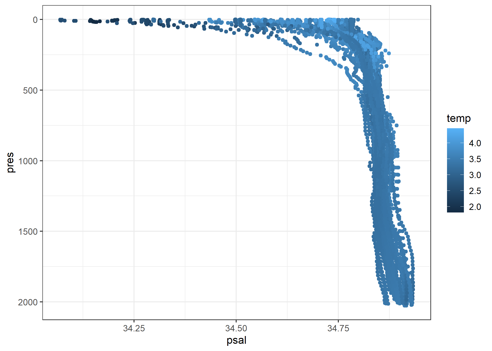

The goal of argodata is to provide a data frame-based interface to data generated by the Argo floats program (doi:10.17882/42182). This package provides low-level access to all variables contained within Argo NetCDF files; for a higher-level interface with built-in visualization and quality control, see the argoFloats package.
Installation
You can install the development version from GitHub using:
# install.packages("remotes")
remotes::install_github("ArgoCanada/argodata")The argodata package downloads files from the FTP and HTTPS mirrors, caches them, and loads them into R. You can set the mirror using argo_set_mirror() and the cache directory using argo_set_cache_dir():
argo_set_mirror("https://data-argo.ifremer.fr/")
argo_set_cache_dir("my/argo/cache")Optionally, you can set options(argodata.cache_dir = "my/argo/cache") in your .Rprofile to persist this value between R sessions (see usethis::edit_r_profile()). Cached files are used indefinitely by default because of the considerable time it takes to refresh them. If you do use a persistent cache, you should update the index files regularly using argo_update_global() (data files are also updated occasionally; update these using argo_update_data()).
Example
The main workflow supported by argodata is:
- Start with
argo_global_prof(),argo_global_traj(),argo_global_meta(),argo_global_bio_prof(),argo_global_bio_prof(), orargo_global_synthetic_prof(). These functions return data frames that contain meta information about each data file in Argo. - Use
argo_filter_radius(), otherargo_filter_*()functions, ordplyr::filter()to subset the index using search criteria. - Use extractor functions like
argo_prof_levels(),argo_traj_measurement(),argo_meta_config_param(), andargo_tech_tech_param()to read information for all files in the index subset.
library(tidyverse)
library(argodata)
# filter profile index using search criteria
prof_lab_may_2020 <- argo_global_prof() %>%
argo_filter_rect(50, 60, -60, -50) %>%
filter(
lubridate::year(date) == 2020,
lubridate::month(date) == 5
)
# download, cache, and load NetCDF files
levels_lab_may_2020 <- prof_lab_may_2020 %>%
argo_prof_levels()
#> Downloading 55 files from 'https://data-argo.ifremer.fr'
#> Extracting from 55 files
# plot!
levels_lab_may_2020 %>%
filter(psal_qc == 1) %>%
ggplot(aes(x = psal, y = pres, col = temp)) +
geom_point() +
scale_y_reverse() +
theme_bw()
See the reference for argo_prof_levels() for more ways to load Argo profiles from argo_global_prof(), argo_global_bio_prof() and argo_global_synthetic_prof(); see argo_traj_measurement() for ways to load Argo trajectories from argo_global_traj() or argo_global_bio_traj(); see argo_meta_missions() for ways to load float meta from argo_global_meta(); see argo_tech_tech_param() for ways to load float technical information from argo_global_tech(); and see argo_info() and argo_vars() for ways to load global metadata from Argo NetCDF files.
Advanced
The argodata package also exports the low-level readers it uses to produce tables from Argo NetCDF files. You can access these using argo_read_*() functions.
prof_file <- system.file(
"cache-test/dac/csio/2900313/profiles/D2900313_000.nc",
package = "argodata"
)
argo_read_prof_levels(prof_file)
#> # A tibble: 70 × 17
#> N_LEVELS N_PROF PRES PRES_QC PRES_ADJUSTED PRES_ADJUSTED_QC
#> * <int> <int> <dbl> <chr> <dbl> <chr>
#> 1 1 1 9.80 1 9.80 1
#> 2 2 1 20.1 1 20.1 1
#> 3 3 1 29.9 1 29.9 1
#> 4 4 1 39.7 1 39.7 1
#> 5 5 1 49.9 1 49.9 1
#> 6 6 1 60.3 1 60.3 1
#> 7 7 1 69.7 1 69.7 1
#> 8 8 1 80.3 1 80.3 1
#> 9 9 1 90.2 1 90.2 1
#> 10 10 1 100. 1 100. 1
#> # … with 60 more rows, and 11 more variables: PRES_ADJUSTED_ERROR <dbl>,
#> # TEMP <dbl>, TEMP_QC <chr>, TEMP_ADJUSTED <dbl>, TEMP_ADJUSTED_QC <chr>,
#> # TEMP_ADJUSTED_ERROR <dbl>, PSAL <dbl>, PSAL_QC <chr>, PSAL_ADJUSTED <dbl>,
#> # PSAL_ADJUSTED_QC <chr>, PSAL_ADJUSTED_ERROR <dbl>Code of Conduct
Please note that argodata is released with a Contributor Code of Conduct. By contributing to this project, you agree to abide by its terms.